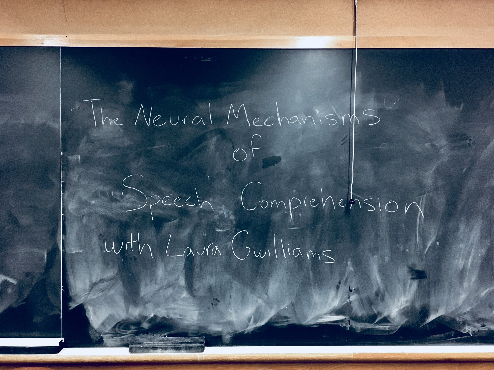

About
Laura Gwilliams received her BA in Linguistics from Cardiff University (UK) and completed a Master's degree in Cognitive Neuroscience of Language at the BCBL (Basque Country, Spain). There she worked with Arthur Samuel and Phillip Monahan on the parsing of morphologically complex spoken words. Laura then joined NYU Abu Dhabi as a research assistant, under the direction of Alec Marantz and Liina Pylkkanen, where she used magnetoencephalography (MEG) to further investigate morphological processing of speech.
Laura began her PhD at New York University (USA) in 2015, under the supervision of Alec Marantz and David Poeppel. During graduate school, her work addressed questions such as: How does the auditory system transform an acoustic signal into dicrete representations like /p/ and /b/? How are words encoded in the brain - as morphemes (e.g. [dis], [appear], [s]) or as whole words? What neural mechanisms allow the processing system to "repair" interpretations of mis-heard speech? How does the brain recall the order of the phonemes it heard in order to correctly identify words in continuous speech?
Laura's dissertation `Towards a mechanistic account of speech comprehension' combines insight from theoretical linguistics, neuroscience and machine-learning. Her PhD research has received recognition from the Society for Neuroscience, the Cognitive Computational Neuroscience Conference, Facebook, the William Orr Dingwall Foundation, the Martin Braine Fellowship, the Society for the Neurobiology of Language, the Douglas and Katharine Fryer Thesis Award and the Cognitive Science Society (see Précis).
As a post-doctoral scholar in the Chang Lab, where Laura joined in 2020, she uses both MEG and electrocorticography (ECoG) data to build computational models of speech comprehension, aiming to better understand how complex linguistic structures (e.g. words) are built from their elemental pieces.
The ultimate goal of Laura’s research is to describe speech comprehension in terms of what neural operations are applied to the acoustic signal; which representational formats are generated and manipulated (e.g. phonetic, syllabic, morphological), and under what processing architecture. She does so by bringing together insight from neuroscience, linguistic theory and machine-learning approaches, in order to form a cross-disciplinary research program.
From a talk I gave at Columbia University; amazing how the "with" makes me sound like a 90's TV host.